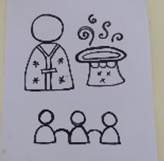

| Metáfora (dibujo) | Enunciados explicativos de mi metáfora (Escribir) | Experiencias de aprendizaje significativas / Incidentes Críticos (Escribir) |
|---|---|---|
| Yo como docente experto del contenido… | La manera como yo veo la impartición de contenido es como circuito de corriente alterna en el que la corriente que circula a través del conductor cambia de sentido de circulación de forma periódica con un valor variable en el tiempo. Para mí la corriente representa el conocimiento. | En mi experiencia universitaria me he topado con muchos profesores, En especial el profesor Yamil Hanna, los cuales me han motivado a investigar por mi cuenta. Y a través de ejercicios de discusión y compartición de ideas confirmo que en el campo de la educación el docente no solo enseña sino que aprende. |
| Yo como docente experto pedagógico… | Quise representar la estructura del traje del l Dr. Octopus, un villano de Spiderman, que se caracteriza por tener unos brazos mecánicos que sale de su espalda. Para mí son las otras ramas en las que se apoya la pedagogía (Filosofía, Antropología, Sociología y Psicología) Para mí el pedagogo es más que docente. Al estar en un aula de clases se desempeñan más roles que simplemente el impartidor de conocimiento. | En mi formación pedagógica en la escuela como normalista se hizo bastante énfasis en la formación integral y formar para la sociedad en beneficio de esta. Gracias doy a Los profesores Reinaldo Herazo y Mari Sanjuanelo por su ayuda y guía en este proceso. Y a la profesora Liliana Reyes, que si bien no es normalista, ha impactado en sobre manera mi manera de ver la educación en torno a sociedad. |
| Yo como experto didáctico…  | Mi representación es un mago con un sombrero mágico de dónde saca elementos para impactar a su audiencia y hacer de su experiencia más significativa. Para mí el docente es el mago y el sombrero representa la creatividad usada para tomar provecho de los métodos (Elementos mágicos) y así hacer la experiencia de aprendizaje más efectiva y significa para sus estudiantes (audiencia). |
Gracias a la observación de metodología de los profesores que he tenido a lo largo de mi carrera, en especial los profesores Yesid Contreras y Juan Camilo Barrios, he notado que los materiales y estrategias deben ser usados a fin de un Propósito y objetivo definidos. |
| Docente como experto en contenido El docente experto en contenido es aquel que a través de su conocimiento ilumina y guía a los alumnos en el proceso de aprendizaje, provocando el flujo de conocimiento en ambas direcciones (T-S, S-S). Se trata de un docente abierto a la posibilidad de aprender nuevas perspectivas; trabaja por formar en las habilidades de la vida y tiene buen manejo de los documentos sugeridos por el MEN. |
Docente como experto pedagógico El docente experto pedagógico es aquel profesional que reflexiona acerca de su proceso de enseñanza para poder llevar sus estudiantes a un aprendizaje continuo y que ellos en conjunto puedan investigar y analizar. Este tipo de docente entiende que el aprendizaje es constante y de por vida, es capaz de evaluar las necesidades e intereses de sus estudiantes para dar enseñanza de calidad apoyándose en la interdisciplinariedad con el fin de adaptar el conocimiento a diferentes contextos necesarios para formar aprendizaje significativo. |
Docente como experto didáctico El experto didáctico es aquel docente que reconoce los métodos y estrategias de enseñanza como herramientas para crear ambientes motivacionales y aprendizaje significativo. Este hace uso de su creatividad integrando aplicaciones y manejo de las TICS con el objetivo de crear caminos divertidos, personalizados y relevantes para cada estudiante hacia el conocimiento. Se caracteriza por innovar y diseñar materiales inéditos. |